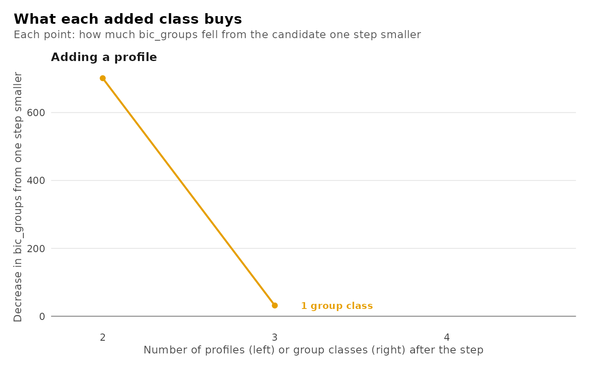
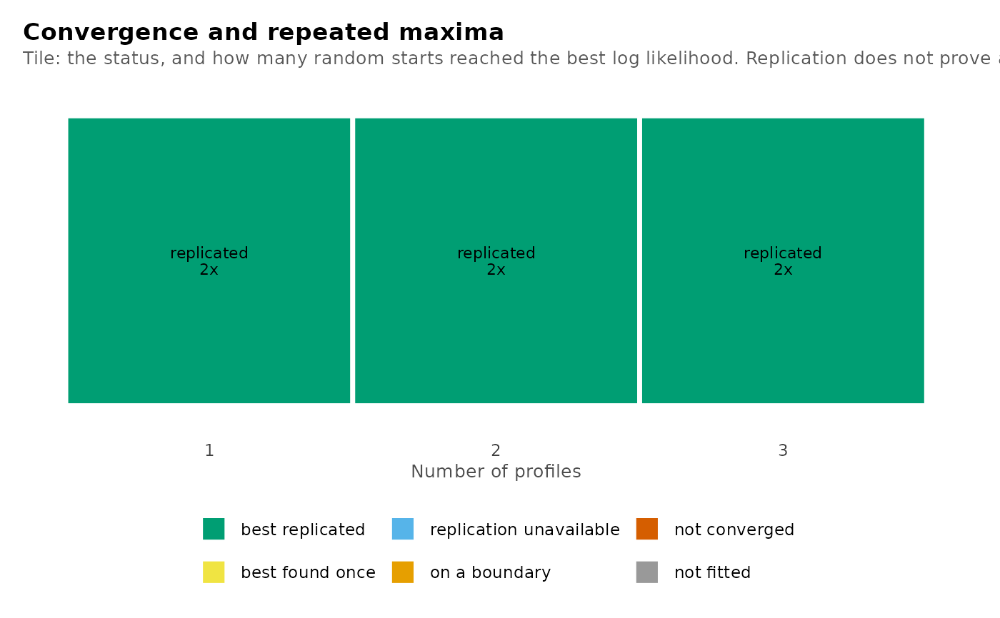

Plot the evidence for choosing the number of classes from an enumeration grid
Source:R/plot-named.R
plot_selection.Rdplot_selection() plots five views of an enumeration grid that bear on the
choice of a solution: how much a criterion improves with each added class,
the criterion over the whole grid, the smallest class, whether each estimate
can be trusted, and how sharply each candidate classifies. None of them
selects a model. Each view is also a function of its own, named below.
Usage
plot_selection(
x,
what = c("all", "deltas", "heatmap", "smallest", "trust", "diagnostics"),
using = "bic_groups",
cutoff = 0.8,
main = NULL,
subtitle = NULL
)Arguments
- x
An enumeration grid from
enumerate_classes(),enumerate_lpa(),enumerate_lca()orenumerate_regressions(). A family grid (enumerate_classes(family = )) has no numbers of profiles to lay the views out by and draws"diagnostics"only.- what
Which view to draw:
"all"(default): the five views below, as a list;"deltas": the decrease in the criterionusingwith each added class and each added group class (plot_deltas());"heatmap": the criterionusingover the numbers of classes and group classes, relative to its lowest value (plot_heatmap());"smallest": the share of the smallest class of every candidate, with 5% drawn dashed (plot_sizes());"trust": whether each candidate converged, whether it has an estimate at a bound, and how many starts reached its best log likelihood (plot_trust());"diagnostics": the relative entropy and the lowest average posterior probability (AvePP) of every candidate, withcutoffdrawn dashed (plot_entropy(),plot_avepp()).
- using
The information criterion that
"deltas"and"heatmap"read: one criterion column of the grid. When not given it is"bic_groups"on a profile or class grid and"bic"on a transition or regression grid.- cutoff
The AvePP cutoff drawn dashed by
"diagnostics": one number above 0 and at most 1 (default 0.8).- main, subtitle
Title and subtitle of the plot, each one string;
NULL(default) keeps the view's own.
Value
A ggplot object, which draws the plot when printed; for "all"
a latents_plots list of the five ggplot objects, named deltas,
heatmap, smallest, trust and diagnostics, which draws every
plot when printed. Conditions raised:
latents_unsupported_view: a view the kind of grid does not offer (every view but"diagnostics"on a family grid,"all"included); the message gives the reason and what the grid offers;latents_bad_argument:xis not an enumeration grid, orusingis not a criterion of the grid.
See also
get_deltas(), get_knees() and get_best() for the tables;
plot_enumeration() for the information criteria; plot_views()
lists the views a grid offers.
Examples
grid <- enumerate_lpa(faithful, c("eruptions", "waiting"),
n_profiles = 1:3, model = "EEI",
n_starts = 2, seed = 1)
plot_selection(grid, what = "deltas")

plot_selection(grid, what = "trust")
